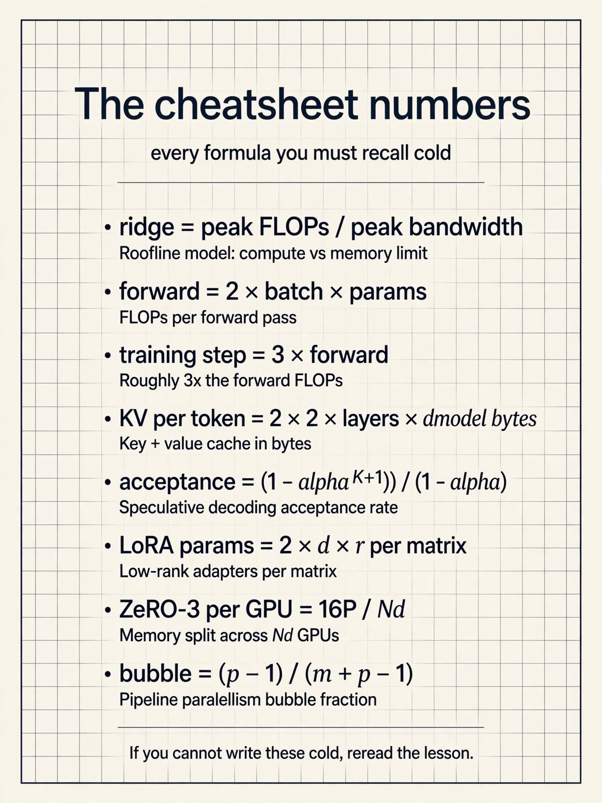
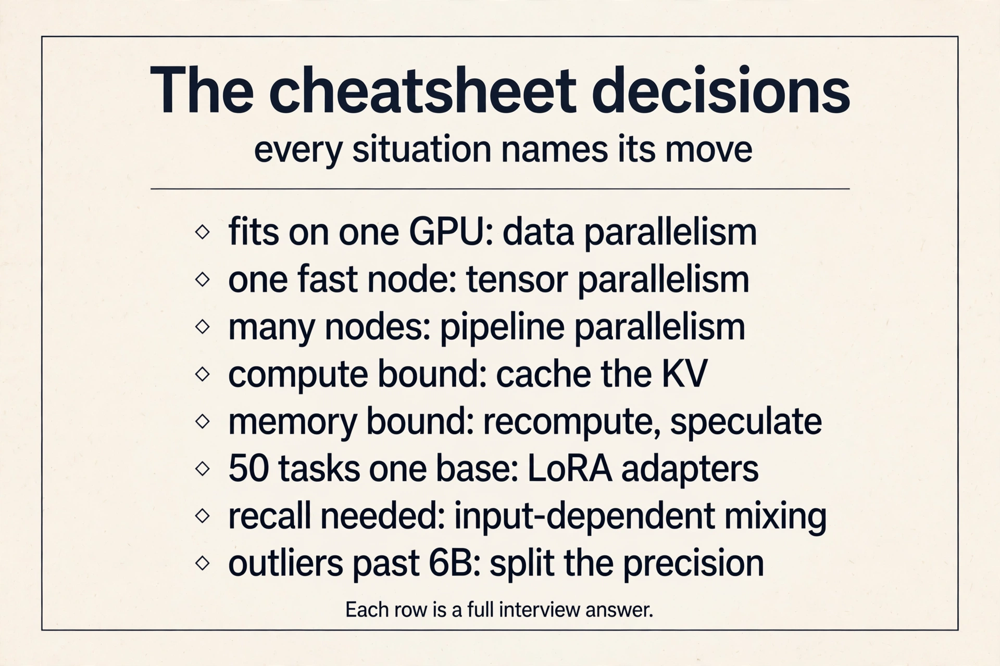

CS229S Cheatsheet
The whole course as a set of short stories. Each block tells one idea the way the lesson tells it: the problem, the number, the fix. Follow the links for the full derivations.


The three gaps
Models grow because scaling laws say they should and because abilities like few-shot learning appear only at scale. But training compute demand grows 32x every 2 years against Moore’s law 2x, model size outruns the A100’s 40 or 80 GB, and a linear-time algorithm can still lose to FlashAttention in wall-clock time. Training costs tens of millions upfront. One inference call is under $0.0001 but compounds with every user. Systems work closes all three gaps. Lecture 1
Bottleneck diagnosis
Every kernel is load, compute, write. Time is max(Tmem, Tmath), and the longer one names the bottleneck. Arithmetic intensity is FLOPs per byte. The ridge is peak FLOPs over peak bandwidth. On an A100 the ridge is 161: 312 TFLOPS over 1,935 GB/s. Below it you are memory bound, so move less data. Above it you are compute bound, so do more math. The same matmul sits at 124 with N=128 (memory bound) and 2731 with N=8192 (compute bound): shape is part of the diagnosis. Lecture 3
The device block
One GPU holds 108 SMs with registers (256 KB per SM), shared memory (192 KB per SM), L2 (40 MB), and HBM (40 GB at about 2 TB/s). A kernel loads from HBM, computes on-chip, writes back. Threads run in warps of 32 under SIMT. One node connects 8 GPUs with NVLink. Many nodes connect with InfiniBand, much slower. Frequent collectives stay inside the node. Rare ones span the cluster. Tensor cores multiply 16 by 16 tiles up to 16x faster, so keep them busy with large tiles. Lecture 5
Six performance principles
Fuse kernels to skip HBM round trips. Parallelize until all SMs are busy. Tile so data is reused on-chip. Cache intermediates when compute bound. Recompute them when memory bound, because the extra math is free. Pipeline to overlap memory with compute. And use the hardware’s fast path: tensor cores, intrinsics, new instructions. Diagnose first, then pick the principle that matches the bottleneck. Lecture 3
FLOP counting
An MLP layer’s forward pass costs 2BHN. The rule of thumb is about 2 x batch x parameter count. The backward pass needs two more matmuls per layer, 4BHN total, about twice the forward, and it must cache the activations. One training step is roughly 3x one forward pass: 1x forward, 2x backward, plus the activation storage. Lecture 4
KV cache numbers
Past keys and values never change, so cache them. Per token: 2 x 2 x layers x dmodel bytes in FP16. A 7B model (24 layers, dmodel 2048) on a 40 GB A100 leaves 26 GB after 14 GB of weights: 200k bytes per token, 130k tokens, batch 128 at length 1024. On an A100 the Tmem/Tmath ratio is 208 at dmodel 2048, so KV caching wins when compute bound and recomputation wins when memory bound. Decode arithmetic intensity is about 2 x batch: GPT-2-XL reads over 3 GB per token, and an RTX 4090 with compute for 30,000 tokens/s decodes about 300. Lecture 4
Speculative decoding
Decoding is memory bound, so extra compute is nearly free. Guess the next tokens with a cheap draft, verify them all in one big-model batch, keep the agreed prefix: branch prediction for language models. Result: 2 to 3x speedup on Chinchilla 70B, T5 11B, LaMDA 137B. Draft options: a small model about 15x smaller (the sweet spot), Medusa heads (nearly free, caps near 2x), or lossy tricks like INT4 and skipped layers. The limit is draft agreement. Lecture 4
FlashAttention
Standard attention is memory bound: the cost is reads and writes around the N by N score matrix, not the FLOPs. The fix never materializes the matrix. Tile Q, K, V through SRAM. Track a running softmax sum L and max m per tile, and rescale each partial output by its share of the true totals, which is exact. Recompute tiles in the backward pass from the cached L and M of size N. 9x less HBM traffic (40.3 to 4.4 GB), 13% more FLOPs, 6x faster (41.7 to 7.3 ms). Lower FLOPs do not imply wall-clock speedup. Lecture 6
Pruning and sparsity
Pruning minimizes loss subject to a nonzero budget, and iterative prune-and-fine-tune beats one-shot. But the pattern decides the value: unstructured pruning is accurate and scatters memory access, so it rarely speeds up. Structured pruning stays regular and hardware-fast. The compromise is 2:4 N:M sparsity, 2 of every 4 values zero, which Ampere sparse tensor cores exploit for a real 50% weight cut. Set per-layer ratios by sensitivity analysis, because layers differ. Lecture 7
Quantization
Storage is parameters times bits. Adds cost O(N) and multiplies O(N^2) in bit-width. FP32 is sign, 8-bit exponent, 23-bit mantissa. BF16 trades precision for range and trains stably. K-means quantization stores log2(S)-bit indices plus S centroids: a 4x4 FP32 matrix with 4 clusters goes from 64 to 20 bytes, 3.2x, with compute still in FP32. Linear quantization maps r = S(q - Z) and runs the whole matmul in integers. Past 6B parameters, naive schemes break on outliers. LLM.int8() fixes them with mixed precision to 175B. Lecture 7
Distillation
Small models underfit, so a large teacher guides a small student. The student matches the teacher’s probability distributions, not just its labels: in the worked example the teacher says plane 5, car 1 (0.982/0.017) and the student learns to move from 3, 2 (0.731/0.269) toward it. The loss is cross-entropy E(-pt log ps) or L2 on the probabilities. Align on logits, features, weights, gradients, or sparsity: the student learns the teacher’s uncertainty, the dark knowledge. Lecture 7
Fine-tuning and PEFT
Base models complete text. Instruction tuning teaches them to follow it. RLHF trains a reward model on human preference rankings and optimizes it, but human labels do not scale. Constitutional AI replaces tens of thousands of labels with about ten human principles: self-critique, revisions, then RLAIF. Then the systems problem: fine-tuning costs over 10x the weights. PEFT tunes almost nothing instead. Prompt tuning trains m tunable input embeddings on a frozen model. LoRA trains low-rank A and B with r much smaller than d and merges them into the weights after: h = Wx + BAx becomes one matmul, so inference pays nothing. Lecture 8
Attention-free architectures
Long convolutions cost O(N squared) naive, but the FFT convolution theorem makes them O(N log N): transform, multiply pointwise, transform back, exact. Linear recurrences unroll into convolutions, so they train in parallel and sample in O(1): that duality is S4, which solved the long-range benchmarks. But language resisted: at 360M scale attention hit 8.39 perplexity against 9.79 to 13.13 for SSMs. The diagnosis is recall: it needs input-dependent mixing, and convolutional mixing is fixed (diagonal-constant). The direction is sub-quadratic plus selective: Mamba, gated linear attention. Lecture 9
Parallelism
Split the data and replicate the weights, or split the weights and replicate the data, or split the layers in space and the batch in time. Mixed-precision Adam needs 16P bytes. ZeRO partitions it down to 16P/Nd across three stages. Gradients sync by ring all-reduce, which is bandwidth-optimal: per-node traffic approaches 2X no matter the GPU count. Tensor parallelism shards attention and MLP weights Megatron-style and must stay inside NVLink. Pipeline parallelism stages layers and flows microbatches, with 1F1B shrinking the bubble. The decision: it fits, use data. One fast node, use tensor. Many nodes, use pipeline. Combine all three at scale. Alpa automates the search. Lecture 10
Interview one-liners
“Below the ridge, move less data. Above it, do more math.” “FlashAttention never writes the N by N matrix: tile, rescale online, recompute backward.” “Decoding is memory bound: one token costs a full model read.” “LoRA merges into the weights, so inference pays nothing.” “Sparsity only helps if the pattern matches the hardware.” “Keep tensor parallelism inside NVLink. Span nodes with data or pipeline.” “KV caching wins when compute bound. Recompute wins when memory bound.” “Recall needs input-dependent mixing: that is why attention survives.”
Classic mistakes
Optimizing math on a memory-bound kernel: the toy proves it buys nothing. Judging algorithms by big-O instead of wall-clock on the target hardware. Unstructured pruning with no speedup, because access stays scattered. Naive quantization past 6B parameters, where outliers break it. Tensor parallelism across nodes, where InfiniBand stalls the all-reduces. One global sparsity ratio, when layers differ. Confusing latency (time per item), throughput (items per second), and bandwidth (the hardware ceiling). Forgetting activations in training memory: the 16P is before them.
Go deeper
The papers behind the numbers: FlashAttention (https://arxiv.org/abs/2205.14135), LoRA (https://arxiv.org/abs/2106.09685), Mamba (https://arxiv.org/abs/2312.00752), ZeRO (https://arxiv.org/abs/1910.02054), DPO (https://arxiv.org/abs/2305.18290), QLoRA (https://arxiv.org/abs/2305.14314), S4 (https://arxiv.org/abs/2111.00396), Zoology (https://arxiv.org/abs/2312.05482). Video explainers: FlashAttention https://www.youtube.com/watch?v=9vcsZK3a76w, LoRA https://www.youtube.com/watch?v=t509sv5MT0w, Mamba https://www.youtube.com/watch?v=9dSkvxS2EB0.